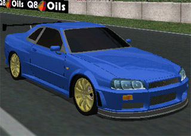

Step 17: Preparing for Download
You are almost done. All you have to do now is get this car ready for a download.
First, drive around in-game, then watch the replay. When the camera and the car line up for a Kodak Moment, pause the replay, Hide the Replay Controls, and hit Print Screen.
Then, open your paint program, create a new file (if applicable), and hit Paste.
Crop the picture so the image of the car is in a file no bigger then 320 X 240. Save it as your car's short name.jpg. You can compress it how much you like, but remember you can sometimes half the file size by dropping from 100% "loss-less" compression to 90% quality. This will now show up in the Carman if you copy it to the Viper Racing\Data folder.
Here's an example:

Once that is done, you now need to make the readme file with installation instructions. Not everyone who downloads the car knows how to use it.
You also need to put the credits for who did what (and if you created the car, you need to put instructions on what you want to be done or not, in case someone else wants to convert this car into another game, like, say, Racer.
I don't car if you put credit for this tutorial or not, just be truthful ;)
Here is a template readme file that I use for all my car conversions (and soon to be my cars!)
Just fill out the fields, and remember, the Class C, B, A, and S goes like Gran Turismo 2 and 3's Classifications,
Class C is the slowest, usually unmodified econoboxes or city cars, Class B is tuned econoboxes and slow Sports Cars, Class A is the fast and powerful Sports Cars, and Class S is the race cars and the Supercars (the Viper is Class S by the way).
Put the Readme, Car file, and Car JPG into a ZIP file, using Maximum Compression. If you need a ZIPping program, go to www.quickzip.com, it is quick, easy, free, and no spyware or ad-ware!
If the author gave you permission to convert the car or you are the maker, go to http://forum.racesimcentral.com and Upload it in the Viper Racing Forum, unless you have your own website to use.
Congratulations! You have successfully converted a car into Viper Racing!